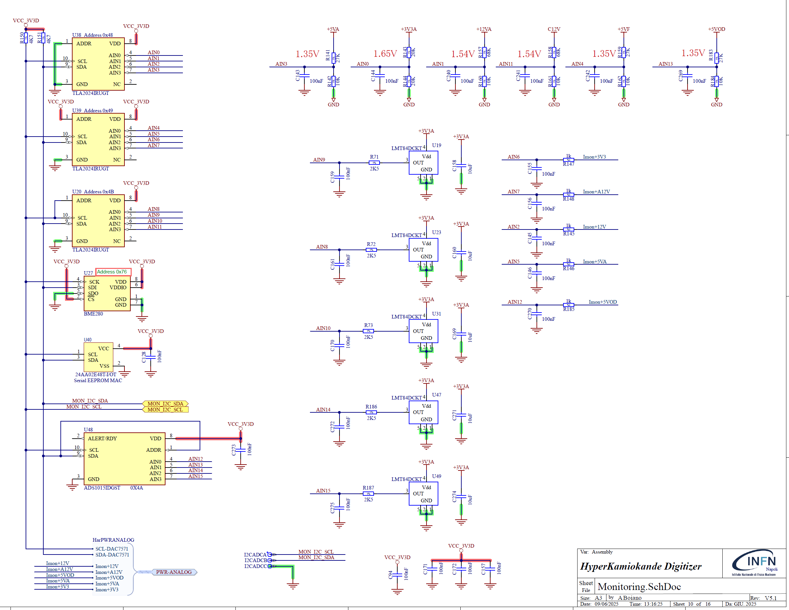
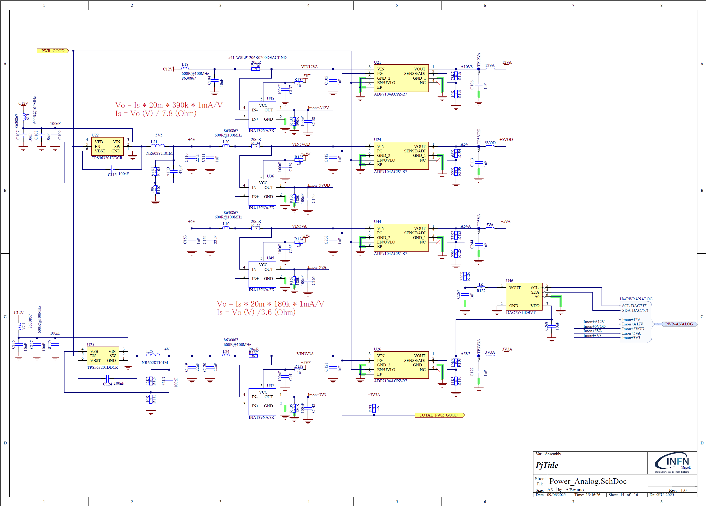

Sensors#
Many sensors are available onboard to monitor various quantities: currents, voltages, temperature in different areas of the board, pressure and humidity. In the following paragraphs, the sensors and their relative slow control commands are divided into sections related to functionalities.
On board voltages and currents schematics#
Voltage, temperature, pressure and relative humidity sensors are shown in the following schematic pages:

The currents drawn by power rails are measured by INA139 devices, which converts the current into a voltage with the help of a resistor. The schematic is reported in the following figure:

On board voltages and currents readout#
This is the list of commands to read voltages and current:
READ DIGx 3V3A
READ DIGx 12VA
READ DIGx C12V
READ DIGx 5V0A
READ DIGx 5V0F
READ DIGx 5V0D
READ DIGx I3V3A
READ DIGx I12VA
READ DIGx I12V
READ DIGx I5VA
READ DIGx I5V0D
where:
xis the digitizer number (0/1)
On board temperatures readout#
There are many temperature sensors on board to check the working point of the front-end and the temperature fo the FPGA and power section.
The following commands return the temperature of various areas of the board
READ DIGx TFPGA # T of FPGA
READ DIGx TPWR # T of power section
READ DIGx TCH0 # T of CH0
READ DIGx TFE # T of CH5
READ DIGx TCH11 # T of CH11
READ DIGx TEMP # T measured by BME280 sensor
It is also possible to read back the raw temperature values with the following set of commands:
READ DIGx TFER
READ DIGx TFPGAR
READ DIGx TPWRR
READ DIGx TCH0R
READ DIGx TCH11R
where:
xis the digitizer number (0/1)
BME280 readout#
The board is equipped with a BME280, which provides Temperature, Relative Humidity, and Pressure. The device is shown in paragraph and is named U27. In paragraph we already showed the command to read the BME280 temperature. Here is the way to read pressure and Relative Humidity.
READ DIGx RELHUM
READ DIGx PRESS
where:
xis the digitizer number (0/1)